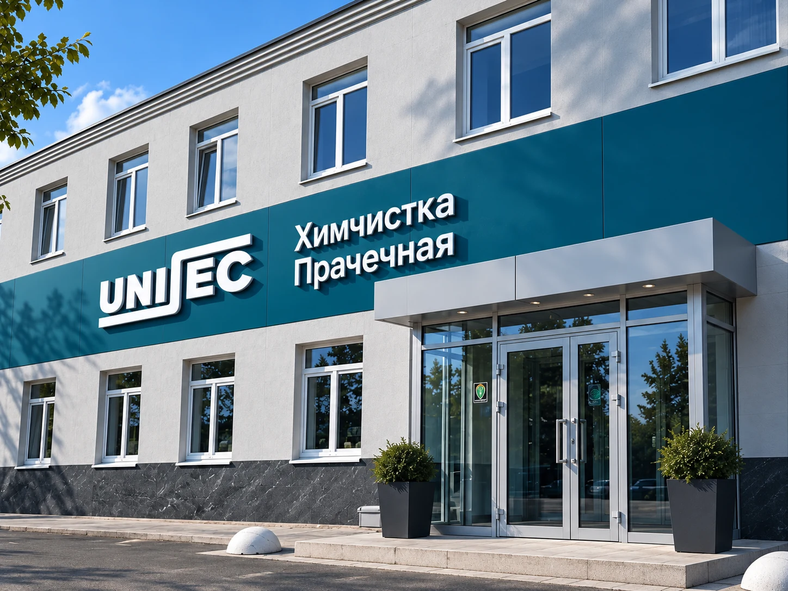
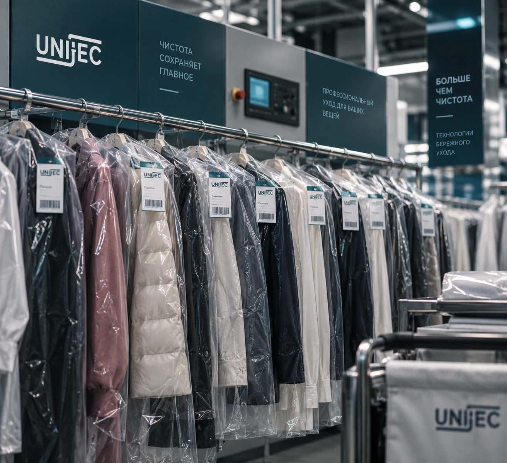
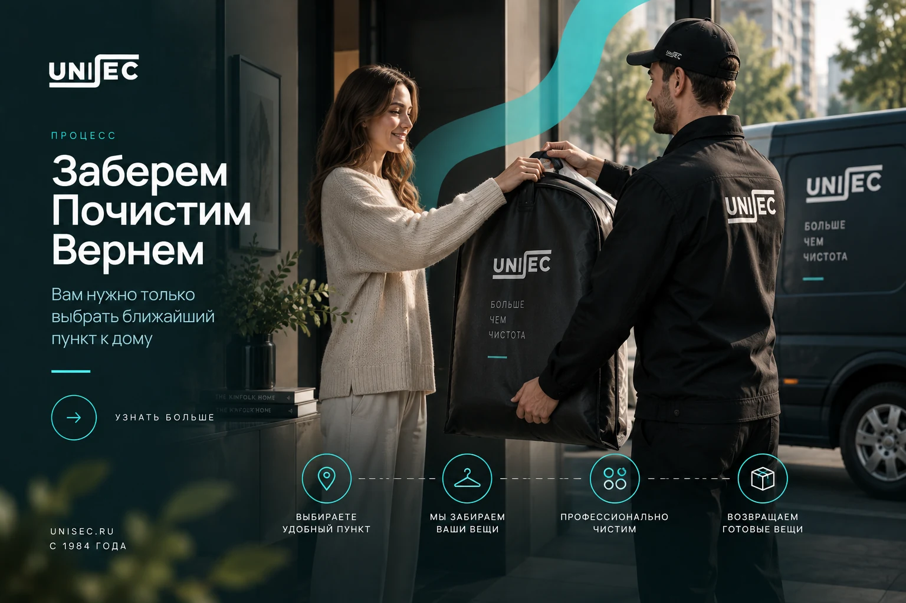
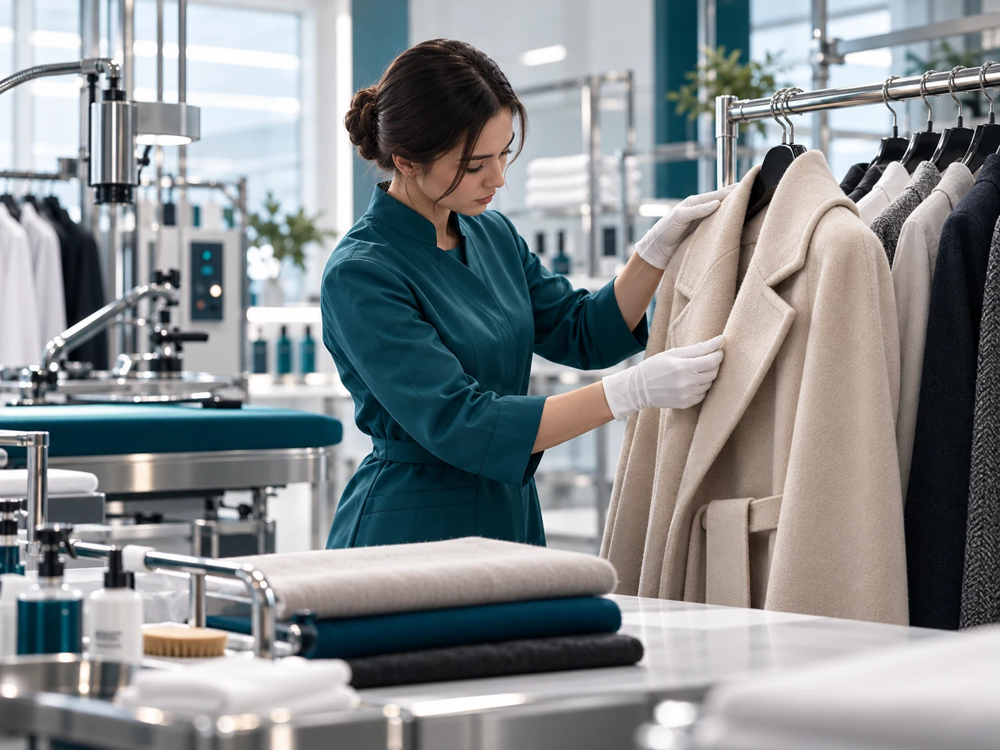

01
Собственная фабрика
Все основные этапы обработки проходят на собственной фабрике UNISEC. Мы контролируем путь вещи от момента приёмки и подбора технологии до глажки, финальной подготовки и возврата клиенту.
Мы не обещаем невозможного. Мы просто внимательно делаем свою работу — на каждом этапе.
Сохраняем красоту любимых вещей, сочетая многолетний опыт и современные технологии.

Все основные этапы обработки проходят на собственной фабрике UNISEC. Мы контролируем путь вещи от момента приёмки и подбора технологии до глажки, финальной подготовки и возврата клиенту.

Используем специализированное оборудование для химчистки, стирки, сушки, отпаривания и глажки. Для разных типов тканей и изделий применяются свои режимы обработки, что позволяет работать бережно и точно.

Более 40 лет мы работаем с одеждой, обувью и домашним текстилем. За это время накоплен большой практический опыт работы с различными материалами, конструкциями изделий и сложными видами загрязнений.

Средства и технология обработки подбираются индивидуально с учётом состава материала, цвета, отделки и характера загрязнения. Это позволяет эффективно очищать вещи, сохраняя их внешний вид и свойства ткани.
Перед обработкой сложные и деликатные изделия оценивают специалисты. Они определяют подходящий способ чистки, обращают внимание на особенности ткани, фурнитуры, декора и возможные риски.

Перед выдачей мы оцениваем внешний вид изделия, качество обработки и глажки, после чего честно сообщаем Вам о результате.
Ждём вас в ТРЦ «Бутово Молл» на Чечёрском проезде, 51.